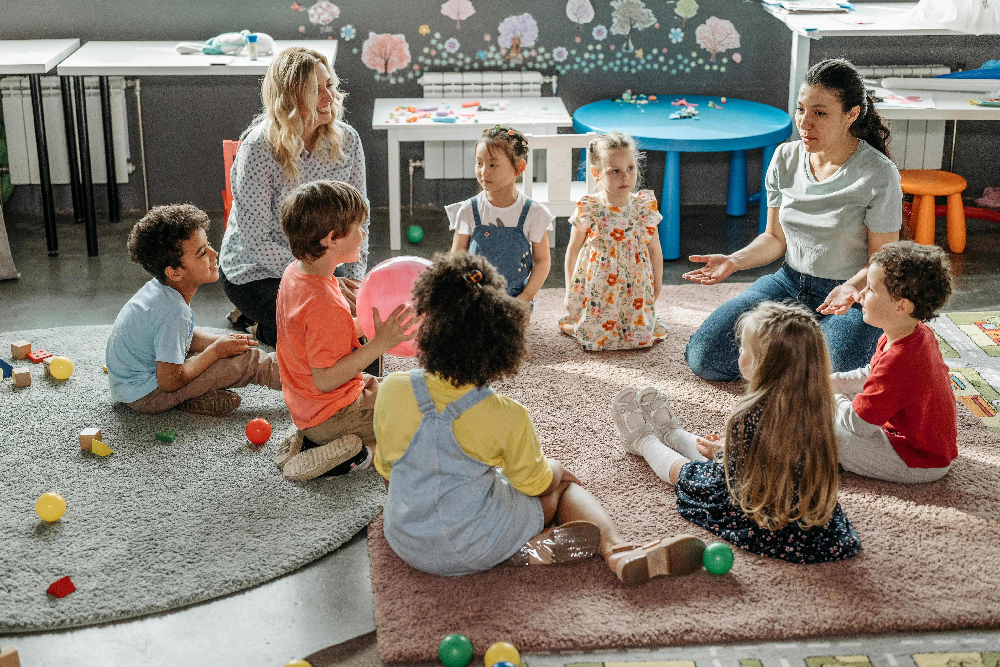
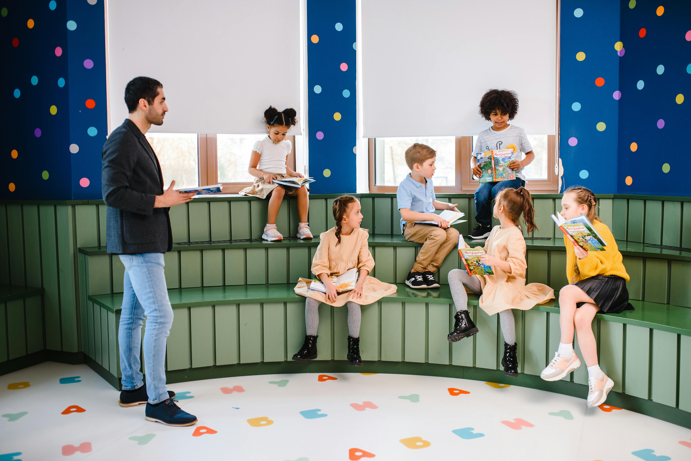

SDG 4: Target 4.2
Ensure that all girls and boys have access to quality early childhood development, care and pre-primary education

What is Target 4.2?
SDG Target 4.2 focuses on ensuring that all children have access to quality pre-primary education by 2030. It is part of the United Nations Sustainable Development Goal 4, which aims to provide inclusive and equitable education for everyone.
The goal is to support early childhood development through proper care and learning opportunities. This includes helping children develop basic skills, emotional readiness, and social abilities before they begin formal schooling.
This target is important because early education improves a child’s future outcomes. Children who attend pre-primary education perform better academically, are less likely to drop out, and develop stronger social skills, while also reducing inequality and gender gaps.
Key Statistics
Understanding the scale of the challenge helps frame the urgency of Target 4.2.

Key Elements of SDG Target 4.2
Target 4.2 is built around several interconnected principles that together define what quality early childhood education looks like:
- Early Childhood Development: Focuses on the mental, emotional, and social growth of children during their early years.
- Access to Pre-Primary Education: Ensures all children can attend nursery, kindergarten, or similar early learning programs.
- Quality of Education: Emphasizes trained teachers, safe environments, and effective learning methods.
- Equal Opportunities: Guarantees access for all children regardless of gender, income, or location.
- School Readiness: Prepares children with basic skills needed for primary education, like communication and behavior.
- Parental and Community Support: Encourages awareness and involvement of families in early childhood education.
Challenges in Achieving SDG Target 4.2
Many governments don't invest enough in early childhood education, so facilities and resources stay limited. Not enough qualified teachers who understand early childhood development affects education quality across low-income regions.
Children from low-income families often cannot afford or access pre-primary education. In some communities, girls or marginalized groups still face restrictions, and rural areas including parts of Nepal lag significantly behind cities.
Severity of challenges affecting early childhood education access globally

Success Stories
Progress is being made in many regions through dedicated efforts and innovative approaches.
Nepal
Nepal has increased access to Early Childhood Development (ECD) centers, especially in rural areas, helping more children prepare for primary school.
Finland
Finland provides free and high-quality early childhood education, with trained teachers and play-based learning, leading to strong academic outcomes.
India
Under the Integrated Child Development Services (ICDS), millions of children receive early education, nutrition, and care through community-based Anganwadi centers.
United States
The Head Start Program supports low-income families by providing early education, health, and nutrition services, improving school readiness.
Rwanda
Rwanda has rapidly expanded access to pre-primary education through government investment and strong community involvement.
Progress and the Road Ahead
Globally, access to pre-primary education has improved over the years, with more children enrolling in early learning programs. Organizations like the United Nations have pushed countries to prioritize early childhood development. Countries like Nepal have made progress by introducing Early Childhood Development (ECD) programs, especially in underserved areas.
Despite progress, millions of children still lack access to quality pre-primary education. Inequality between urban and rural areas continues to be a major issue, along with shortages of trained teachers. To achieve Target 4.2 by 2030, governments must increase funding, improve teacher training, and ensure equal access for all children.
How You Can Help Achieve SDG Target 4.2
Everyone has a role to play in ensuring quality early childhood education for all children worldwide.
Support Early Education Initiatives: Contribute by supporting programs and organizations that promote early childhood education, including those backed by the United Nations and local groups.
Raise Awareness: Talk to others about the importance of pre-primary education. Sometimes the biggest barrier isn't resources — it's people not knowing this matters.
Volunteer Your Time: Help at local schools or community centers, especially in areas with limited resources like rural parts of Nepal.
Promote Equal Opportunities: Encourage education for all children regardless of gender, background, or income level.
Support Government and Community Efforts: Advocate for better education policies and increased funding for early childhood development programs.
Use Digital Platforms for Good: Share information, create content, or use projects like this one to spread awareness about early education.
Further Reading and Resources
Explore these organizations working to achieve quality early childhood education for all:
- UNICEF – SDG 4 Data & Early Childhood Education: Provides global data, statistics, and insights on early childhood development and tracks progress using child development indicators.
- UNESCO – Early Childhood Care and Education (ECCE): Offers detailed explanations, policies, and global strategies for improving early education systems and lifelong development.
- Global Report on Early Childhood Care and Education: A comprehensive UNESCO & UNICEF report explaining challenges, solutions, and global progress in early childhood education.
- UNESCO Global Education Monitoring (GEM) Report: Provides research, statistics, and analysis on SDG 4 progress, including inequality and access issues in early education.
- UNICEF Education Resources: Focuses on practical actions, policy recommendations, and real-world programs to improve access to pre-primary education globally.